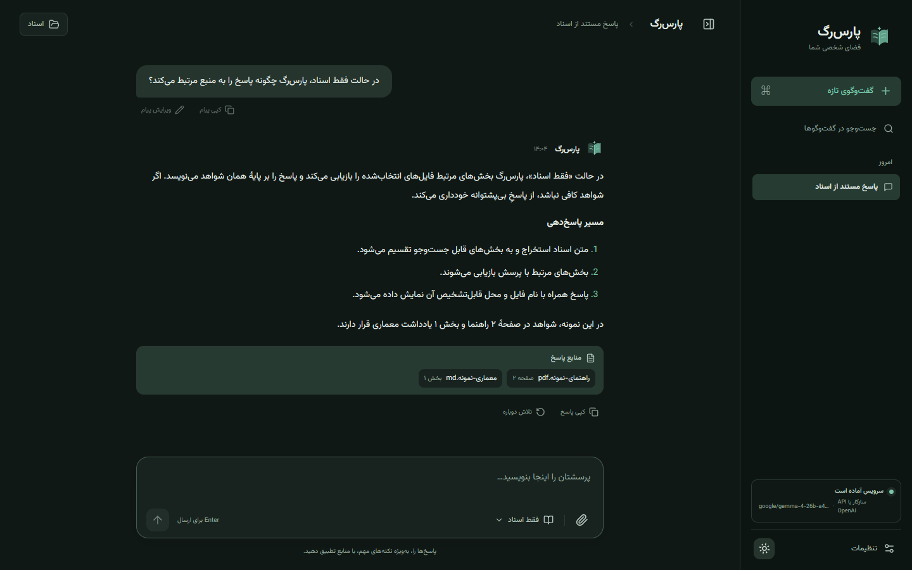

@budget.pdf What is the total cost? And @timeline.docx When is delivery?
- Understanding the question and conversation
- Finding relevant evidence in documents
- Writing the final answer
ParsRAG reads your Persian and English documents on your own machine and ties each answer to the file and page it came from.
Like a manuscript with notes in its margins, every claim in a ParsRAG answer points back to the passage it came from. Mention a file with @ to bind part of a question to it.
@budget.pdf What is the total cost? And @timeline.docx When is delivery?
Project budget
2. Costs and payment terms
Hardware and hosting are provided by the client.
Total cost: 4.2 billion rials, including licenses and three months of support.
Payment in three installments, per the schedule.
Delivery timeline
Phase 3: integration and acceptance test
The acceptance test runs on the client's own data.
Delivery is planned for the end of Azar 1405, once the acceptance test passes.
Training sessions follow delivery.
Sample documents. Scroll to watch the answer form; in a real conversation the sources panel opens each cited passage.
From upload to answer, every step that touches your document runs on your machine.
Add PDF, Word, PowerPoint, images, or text. The file type and size are checked before anything is read.
Text layers are extracted directly. Scanned pages and images go through Tesseract OCR with Persian and English data.
Text is split into passages that remember their file and page, slide, paragraph, or section. A short bridge joins consecutive PDF pages.
A multilingual-e5 model turns each passage into a vector, locally, on CPU or GPU.
Vectors are stored in Qdrant under the conversation they belong to. Delete the conversation and they go with it.
The closest passages go to the model with your question, and the answer returns with its sources.
Three explicit answer modes, the same ones you pick in the composer. Here is one question, answered three ways.
When is delivery, and why was the date moved?
Delivery is planned for the end of Azar 1405, after the acceptance test.timeline.docx, paragraph 7 The selected documents don't say why the date was moved, so that part is left unanswered.
Delivery is planned for the end of Azar 1405, after the acceptance test.timeline.docx, paragraph 7 The documents give no reason. Dates like this usually move when an acceptance test is added or extended; confirm with the project owner.
Documents aren't searched in this mode. Delivery dates are usually set in a project timeline or contract; switch modes to answer from yours.
Strict mode refuses when retrieved evidence doesn't meet its threshold. It's a safeguard, not a guarantee: check important answers against their sources.
Parsing, OCR, embeddings, and vector search always run locally. Only the model you choose decides where the answer is written.
Generation runs on this workstation. No prompt or excerpt leaves through the model adapter.
In every mode, embeddings and Qdrant stay local, and API keys stay in memory or environment variables, never in browser storage or logs.
Office files, scans, data, and code are read with their structure, so a citation can name a slide or a section, not just a file.
.pdf .docx .pptx
Native structured extraction, with OCR for scanned or image-heavy PDF pages and images inside Word and PowerPoint files.
.png .jpg .jpeg .webp .bmp .tif .tiff
Validated, normalized, and read with Persian and English OCR.
.txt .md .markdown .json .csv .tsv .log
UTF-8 extraction. JSON is validated and normalized before indexing.
.html .htm .xml .yaml .yml .toml .ini .cfg
Visible text from markup, and UTF-8 text from configuration files.
.py .js .jsx .ts .tsx .css .sql
UTF-8 extraction with section metadata, so answers can point into a file.
By default a conversation holds up to 10 files, each up to 100 MiB, with up to 500 MiB per upload. Office archives are checked for suspicious compression, and unsupported binary formats are rejected rather than misread.
The workspace is laid out for Persian and for English, not mirrored as an afterthought. Drag the divider to compare.


You need Docker Engine with Compose and 8–16 GB of RAM, depending on the model. After the first download, a local model works offline.
git clone https://github.com/Pooria82/ParsRAG.git
cd ParsRAG
cp .env.example .env
docker compose --profile local-model up -d qdrant ollama
docker compose --profile local-model run --rm ollama-init
docker compose --profile local-model up -d --build appgit clone https://github.com/Pooria82/ParsRAG.git
cd ParsRAG
cp .env.example .env
docker compose -f compose.yaml -f compose.gpu.yaml --profile local-model up -d qdrant ollama
docker compose -f compose.yaml -f compose.gpu.yaml --profile local-model run --rm ollama-init
docker compose -f compose.yaml -f compose.gpu.yaml --profile local-model up -d --build appgit clone https://github.com/Pooria82/ParsRAG.git
cd ParsRAG
cp .env.example .env
# Set LLM_PROVIDER=api, the model, base URL, key and disclosure flag in .env
docker compose up -d --buildThen open http://127.0.0.1:8000. The installation guide covers AMD, low-VRAM cards, and native development.
ParsRAG is built for people who can't send their files to a cloud chatbot, and still want answers they can check.